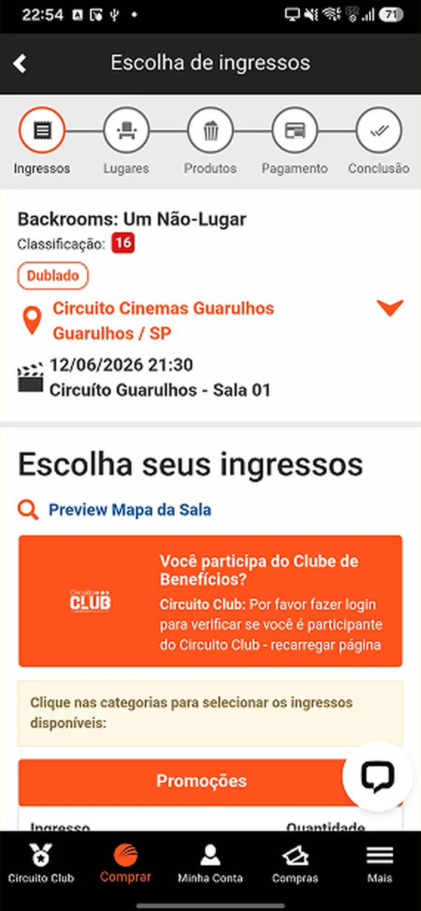

Estudo conceitual de redesign
Circuito Cinemas
Auditoria heurística do app de uma rede de cinemas, com 34 pontos de atrito mapeados (16 detalhados no case), e uma proposta que reorganiza a navegação, organiza a compra em quatro etapas com progresso visível e põe o saldo do programa de fidelidade na home e na compra.
- Problema
- Navegação confusa, compra longa e programa de fidelidade sem saldo à vista, segundo a minha auditoria do app.
- Minha contribuição
- UX/UI Designer: auditoria, benchmark, arquitetura, fluxos, telas e um design system inicial.
- Evidências
- Auditoria e benchmark feitos por mim, sem pesquisa com usuários. O protótipo ainda não foi testado com pessoas.
- Ferramentas
- Figma e Notion, 2026
O protótipo abre no Figma, na tela Home.